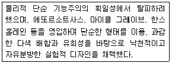
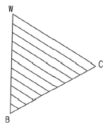

컬러리스트산업기사 (2017-03-05 기출문제)
1과목: 색채심리
1. 마케팅에 대한 설명으로 틀린 것은?
- 현재의 마케팅은 대량생산과 함께 발생했다.
- 시대에 따른 유행이나 스타일과 관계없이 지속된다.
- 제품의 유용성, 가격을 알려준다.
- 수요, 공급의 법칙에 따라 물건을 사용 가능하게 해준다.
(정답률: 77%)

2. 오륜기의 5가지 색채로 옳은 것은?
- 빨강, 노랑, 파랑, 초록, 자주
- 빨강, 노랑, 파랑, 흰색, 검정
- 빨강, 노랑, 파랑, 초록, 남색
- 빨강, 노랑, 파랑, 초록, 검정
(정답률: 80%)
3. 마케팅 믹스의 4P 요소가 잘못 연결된 것은?
- 제품(product) -포장
- 가격(price) -가격조정
- 촉진(promotion) -서비스
- 유통(place) -물류관리
(정답률: 42%)
4. 색채치료에 대한 설명으로 잘못된 것은?
- 질병을 국소적으로 보지 않고 전체적으로 자연 치유력을 높이는 보완 치료법이다.
- 색채치료는 인간의 조직 활동을 회복시켜 주거나 억제 하지만 동물에게는 효과가 검증되지 않았다.
- 과학적인 현대의학의 장점을 살리는 동시에 자연적인 면역력을 증강시키는 것이다.
- 고유한 파장과 진동수를 갖고 있는 에너지의 형태인 색채 처방과 반응을 연구한 결과이다.
(정답률: 71%)
5. 색채조절의 효과에 대한 설명이 틀린 것은?
- 눈의 피로를 막아주고, 자연스럽게 일할 기분이 생긴다.
- 조명의 효율과 관계없지만 건물을 보호, 유지하는데 좋다.
- 일에 주의가 집중되고 능률이 오른다.
- 안전이 유지되고 사고가 줄어든다.
(정답률: 94%)
6. 언어척도법(Semantic Differential Method)에 대한 설명으로 틀린 것은?
- 신중한 답을 구하기 때문에 시간적 여유를 가지고 판단하도록 유도한다.
- 서로 상반되는 형용사군을 이용한다.
- 세밀한 차이를 필요로 할 경우 7단계 평가로 척도화 한다.
- 색채의 지각현상과 감정효과를 다면적으로 분석할 수 있다.
(정답률: 69%)
7. 성별과 연령에 따른 색채 선호에 대한 설명으로 틀린것은?
- 남성들은 비교적 어두운 톤을 선호하고 여성들은 밝고 맑은 톤을 선호하는 경향이 있다.
- 문화적인 차이가 있는 국가들 사이에서는 연령에 따른 공통점은 나타나지 않는다.
- 지적 능력이 낮을수록 원색 계열, 밝은 톤을 선호하는 편이다.
- 유년이 기억, 교육 과정, 교양적 훈련에 의해 색채 기호가 생성된다.
(정답률: 87%)
8. 색채의 시간성과 속도감을 이용한 색채계획에 있어서 틀린 것은?
- 오랜 시간 기다려야 하는 대합실에 적합한 색채는 지루함이 느껴지지 않는 난색계의 색을 적용한다.
- 손님의 회전율이 빨라야 할 패스트푸드 매장에서는 난색계의 색을 적용한다.
- 일상적이고 단조로운 일을 하는 공장에는 한색계의 색상을 적용한다.
- 고채도의 난색계 색상이 한색계보다 속도감이 빠르게 느껴지므로 스포츠카의 외장색으로 좋다.
(정답률: 72%)
9. 건축이나 환경의 색채에 대한 심미적 기능이 아닌 것은?
- 공간의 분위기를 창출한다.
- 재료의 성격(질감)을 표현한다.
- 형태의 비례에 영향을 준다.
- 온도감에 영향을 준다.
(정답률: 31%)
10. blue-green, gray, white와 같은 색채에서 느껴지는 맛은?
- 단맛
- 쓴맛
- 신맛
- 짠맛
(정답률: 65%)
11. 기후에 따른 일반적인 색채기호의 설명으로 틀린 것은?
- 라틴계 민족은 난색계를 좋아한다.
- 머리칼과 눈동자색이 검정이나 흑갈색의 민족은 한색계를 선호한다.
- 스페인, 라틴아메리카의 사람들은 난색계를 선호한다.
- 북구계의 게르만인과 스칸디나비아 민족은 한색계를 선호한다.
(정답률: 84%)
12. 세계적으로 잘 알려진 음료회사인 코카콜라는 모든 제품과 회사의 표시 등을 빨간색으로 통일하고 있다. 이러한 것은 기업이 무엇을 위해 실시하는 전략인가?
- 색채를 이용한 제품이 포지셔닝(positioning)
- 색채를 이용한 브랜드 아이덴티티(brand identity)
- 색채를 이용한 소비자 조사
- 색채를 이용한 스타일링(styling)
(정답률: 90%)
13. 색채의 추상적 연상에 대한 예가 틀린 것은?
- 빨강-정열
- 초록-희망
- 파랑-안전
- 보라-우아
(정답률: 73%)
14. 색채와 문화의 관계가 적절하지 않은 것은?
- 서양 문화권에서 파랑은 노동자 계급을 의미한다.
- 동양 문화권에서 흰색은 죽음을 의미한다.
- 서양 문화권에서 노랑은 왕권, 부귀를 의미한다.
- 북유럽에서 녹색은 영혼과 자연의 풍요로움을 의미한다.
(정답률: 69%)
15. 뉴턴의 색과 일곱 음계 중 '레'에 해당하고, 새콤달콤한 맛을 연상시키는 것은?
- 빨강
- 주황
- 연두
- 보라
(정답률: 89%)
16. 색채와 공감각에서 촉감과 관련된 색의 연결이 틀린 것은?
- 부드러움 -밝은 분홍
- 촉촉함 -한색계열 색채
- 건조함 -밝은 청록
- 딱딱함 -저명도, 저채도 색채
(정답률: 84%)
17. 색의 심리효과를 이용한 색채설계로 옳은 것은?
- 난색계의 조명에서는 물체가 더 짧고 더 작아 보인다.
- 북, 동향의 방은 차가운 색을 사용한다.
- 무거운 물건의 포장색은 밝은 색을 사용한다.
- 교실의 천장과 윗벽은 어두운 색을 사용한다.
(정답률: 77%)
18. 색의 연상에 관한 설명으로 틀린 것은?
- 주황은 식욕을 증진시키는데 효과적인 색이다.
- 검정은 위험을 경고하는 데 효과적인 색이다.
- 초록은 휴식과 안정이 필요한 공간에 효과적인 색이다.
- 파랑은 신뢰를 상징하는 기업의 이미지에 효과적인 색이다.
(정답률: 94%)
19. 석유나 가스의 저장탱크를 흰색이나 은색으로 칠하는 이유는?
- 흡수율이 높은 색이므로
- 팽창성이 높은 색이므로
- 반사율이 높은 색이므로
- 수축성이 높은 색이므로
(정답률: 89%)
20. 색채의 선호도를 파악하는 조사방법이 아닌 것은?
- 순위법
- 항상자극법
- 언어척도법
- 감성 데이터베이스 조사
(정답률: 63%)
2과목: 색채디자인
21. 다음 중 식욕을 촉진하기 위한 음식점의 실내 색채계획으로 적당한 것은?
- 보라색 계열
- 주황색 계열
- 청색 계열
- 녹색 계열
(정답률: 94%)
22. 다음에서 설명하는 내용과 관련이 있는 용어는?

- 구성주의
- 멤피스그룹
- 옵아트
- 팝아트
(정답률: 51%)
23. 입체모형 혹은 컴퓨터 그래픽에 의해 컬러 디자인의 최종상황을 검증하는 것을 무엇이라 하는가?
- 컬러 오버레이
- 컬러 스케치
- 컬러 스킴
- 컬러 시뮬레이션
(정답률: 87%)
24. 곡선에 대한 설명이 틀린 것은?
- 점의 방향이 끊임없이 변할 때에는 곡선이 생긴다.
- 곡선은 우아, 매력, 모호, 유연, 복잡함의 상징이다.
- 기하곡선은 분방함과 풍부한 감정을 나타낸다.
- 포물선은 속도감, 쌍곡선은 균형미를 연출한다.
(정답률: 54%)
25. 기존 제품의 기능, 재료, 형태를 필요에 따라 개량하고 조형성을 변경시키는 작업을 의미하는 디자인 용어는?
- 모던 디자인(modern design)
- 리디자인(redesign)
- 미니멀 디자인(minimal design)
- 굿 디자인(good design)
(정답률: 88%)
26. 시대사조와 대표작가의 연결이 틀린 것은?
- 데 스틸 -몬드리안
- 바우하우스 -윌터 그로피우스
- 큐비즘 -피카소
- 팝아트 -윌리엄 모리스
(정답률: 86%)
27. 에코디자인(Eco-Design)의 설명으로 틀린 것은?
- 환경 친화의 적절한 조화를 이루는 디자인
- 환경과 인간을 고려한 자연주의 디자인
- 디자인, 생산, 품질, 환경, 폐기에 따른 총체적 과정의 친환경 디자인
- 기존의 디자인을 수정 및 개량하는 디자인
(정답률: 86%)
28. 시대별 패션색채의 변천에 대한 설명이 틀린 것은?
- 1900년대에는 부드럽고 환상적인 분위기의 파스텔 색조가 유행하였다.
- 1910년대에는 오리엔탈리즘의 영향을 받아 밝고 선명한 색조의 오렌지, 노랑, 청록 등이 주조색을 이루었다.
- 1930년대에는 아르데코의 경향과 함께 흑색, 원색과 금속의 광택이 등장하였다.
- 1940년대에는 초반은 군복의 영향으로 검정, 카키, 올리브 등이 사용되었다.
(정답률: 44%)
29. 제품디자인 색채계획 단계 중 기획단계에 포함되지 않는 것은?
- 제품기획
- 시장조사
- 색채본석 및 색채계획서 작성
- 소재 및재질 결정
(정답률: 65%)
30. 19세기 이후 산업디자인의 변화로 거리가 먼 것은?
- 제품이 대량생상되어 가격이 저렴해짐
- 다양한 제품이 생산되어 소비자층이 확산됨
- 공예 제품같이 정교한 제품을 소량 생산함
- 튼튼한 제품 생산으로 제품의 수명주기가 연장됨
(정답률: 76%)
31. 뜻을 가진 그림, 말하는 그림으로 목적미술의 개념이라 할 수 있는 것은?
- 캐릭터
- 카툰
- 캐리커쳐
- 일러스트레이션
(정답률: 55%)
32. 좋은 디자인이 되기 위한 조건이 아닌 것은?
- 기능성
- 심미성
- 창조성
- 윤리성
(정답률: 86%)
33. 표현기법 중 완성될 제품의 대한 예상도로서 실물의 형태나 색채 및 재질감을 실물과 같이 충실하게 표현하는 것을 의미하는 것은?
- 스크래치 스케치
- 렌더링
- 투시도
- 모델링
(정답률: 59%)
34. 심벌 디자인(symbol design)의 하나로 문화나 언어를 초월해서 이해할 수 있도록 만든 그림문자는?
- 픽토그램(pictogram)
- 로고타입(logotype)
- 모노그램(monogram)
- 다이어그램(diagram)
(정답률: 91%)
35. 디자인의 원리에 대한 설명으로 틀린 것은?
- 대비는 시각적 힘의 강약에 의한 형의 감정효과이다.
- 비대칭은 형태상으로 불균형이지만, 시각상의 힘의 정돈에 의하여 균형이 잡힌다.
- 등비수열에 의한 비례는 1:2:4:8:16.과 같이 이웃하는 두 항의 비가 일정한 수열에 의한 비례이다.
- 강조는 규칙성, 균형을 주고자 할 때 이용하면 효과적이다.
(정답률: 74%)
36. 디자인에 대한설명 중틀린것은?
- 디자인의 미적가치는 실제 사용하는 과정에서 잘 작동하고 기대되는 성능을 발휘하는 실용적 가치이다.
- 빅터 파파넥(Victor Papanek)은 디자인을 의미있는 질서를 만드는 노력이라고 했다.
- 디자인은 인간 생활의 향상을 위한다는 점에서 문제해결 방법이다.
- 오늘날 디자인 분야는 점차 상호지식을 공유하는 토털(total) 디자인이 되고 있다.
(정답률: 55%)
37. 게슈탈트 심리학자들에 의해서 제시된 시지각 법칙이 아닌 것은?
- 근접성의 원리
- 유사성의 원리
- 연속성의 원리
- 대조성의 원리
(정답률: 74%)
38. "형태는 기능을 따른다"라고 하여 기능에 충실함과 형태의 아름다움을 강조한 사람은?
- 몬드리안
- 루이스 설리반
- 요하네스 이텐
- 앤디 워홀
(정답률: 65%)
39. 디자인 편집의 레이아웃(layout)에 대한 설명 중 틀린 것은?
- 사진과 그림이 문자보다 강조되어야 한다.
- 시각적 소재를 효과적으로 구성, 배치하는 것이다.
- 전체적으로 통일과 조화를 고려해야 한다.
- 가독성이 있어야 한다.
(정답률: 80%)
40. 패션 디자인에대한 설명중옳은 것은?
- 의복의 균형은 디자인 요소들의 시각적 무게감에 의해 이루어진다.
- 재질(texture)은 사람들이 가장 먼저 지각하는 디자인 요소로서 개인의 기호, 개성, 심리에 반응하는 다양한 감정 효과를 지닌다.
- 패션디자인은 독창성과 개성을 디자인의 기본조건으로 하며 선, 재질, 색채 등을 고려하여 스타일을 디자인 한다.
- 색채이미지는 다양성과 개별성을 지니며 단색 이용시 더욱 뚜렷한 이미지를 전달한다.
(정답률: 25%)
3과목: 섹채관리
41. 화면에 디스플레이되는 최대해상도 및표현 할수 있는 색채의 수가 결정되는 것과 관련 없는 것은?
- 그래픽 카드
- 모니터의 픽셀 수 및 컬러심도
- 운영체제
- 모니터의 백라이트
(정답률: 59%)
42. 전자기파장의 길이가 가장 긴 것은?
- 적색 가시광선
- 청색 가시광선
- 적외선
- 자외선
(정답률: 60%)
43. 물체색의 측정 시 사용하는 표준 백색판의 기준으로 거리가 먼 것은?
- 충격, 마찰, 광조사, 온도, 습도 등의 영향을 받지 않을 것
- 균등 확산 흡수면에 가까운 확산 흡수 특성이 있고, 전면에 걸쳐일정할 것
- 표면이 오염된 경우에도 세척, 재연마 등의 방법으로 오염들을 제거하고 원래의 값을 재현시킬 수 있는것
- 분광 반사율이 거의 0.9 이상으로, 파장 380.780nm에 걸쳐거의 일정할것
(정답률: 36%)
44. 가법혼색의 원색과 감법혼색의 원색이 바르게 표현된 것은?
- 가법혼색-R,G,B /감법혼색-C,M,Y
- 가법혼색-C,G,B /감법혼색-R,M,Y
- 가법혼색-R,M,B /감법혼색-C,G,Y
- 가법혼색-C,M,Y /감법혼색-R,G,B
(정답률: 82%)
45. 안료와 염료의 구분이 옳은 것은?
- 고착제를 사용하면 안료이고, 사용하지 않으면 염료이다.
- 수용성이면 안료이고, 비수용성이면 염료이다.
- 투명도가 높으면 안료이고, 낮으면 염료이다.
- 무기물이면 염료이고, 유기물이면 안료이다.
(정답률: 72%)
46. 합성수지도료에 대한 설명이 틀린 것은?
- 도막형성 주요소로 셀룰로스 유도체를 사용한 도료의 총칭이다.
- 화기에 민감하고 광택을 얻기 어렵다.
- 부착성, 휨성, 내후성의 향상을 위하여 알키드수지, 아크릴수지 등과 함께 혼합하여 사용된다.
- 건조가 20시간 정도 걸리고, 도막이 좋지 않지만 내후성이 좋고 값이 싸서 널리 사용된다.
(정답률: 45%)
47. 분광반사율의 분포가 서로 다른 두 개의 색자극이 광원의 종류와 관찰자 등의 관찰조건을 일정하게 할 때에만 같은 색으로 보이는 현상은?
- 메타머리즘
- 무조건 등색
- 색채적응
- 컬러 인덱스
(정답률: 70%)
48. 분광식 색채계에 대한 설명 중 틀린 것은?
- 분광반사율을 측정하여 색채를 산출하는 방법이다.
- 색처방 산출을 위한 자동배색에 측정 데이터를 직접활용 할수 있다.
- 정해진 광원과 시야에서만 색채를 측정할 수 있다.
- 색채재현의 문제점 등에 근본적인 대응을 할 수 있다.
(정답률: 63%)
49. 가공하지 않은 원료 그대로의 무명천은 노란색을 띤다. 이를 더욱흰색으로 만드는다음의 방법중 가장 효과적인 것은?
- 화학적 방법으로 탈색
- 파란색 염료로 약하게 염색
- 광택제 사용
- 형광물질 표백제 사용
(정답률: 70%)
50. CCM 소프트웨어의 기능 중 Formulation 부분의 기능으로 틀린 것은?
- 컬러런트의 정보를 이용한 단가계산
- 컬러런트와 적합한 전색제 종류 선택
- 컬러런트의 적합한 비율계산으로 색채 재현
- 시편을 측정하여 오차 부분을 수정하는 Correction 기능
(정답률: 33%)
51. 반사 갓을 사용하여 광원의 빛을 모아 비추는 조명방식으로 조명 효율이 좋은 반면 눈부심이 일어나기 쉽고 균등한 조도 분포를 얻기 힘들며 그림자가 생기는 조명 방식은?
- 반간접조명
- 직접조명
- 간접조명
- 반직접조명
(정답률: 53%)
52. 장치 특성화(device characterization)라고도 부르며, 디지털 색채를 처리하는 장치의 컬러 재현 특성을 기록하는 과정은?
- 색영역 맵핑(color gamut mapping)
- 감마조정(gamma control)
- 프로파일링(profiling)
- 컴퓨터 자동배색(computer color matching)
(정답률: 31%)
53. 자연에서 대부분의 검은색 또는 브라운 색을 나타내는 색소는?
- 멜라닌
- 플라보노이드
- 안토시아니딘
- 포피린
(정답률: 75%)
54. 디스플레이 모니터 해상도(resolution)에 대한 설명이 틀린 것은?
- 화소의 색채는 C, M, Y 스펙트럼 요소들이 섞여서 만들어진다.
- 디스플레이 모니터 내에 포함되어 있는 화소의 개수를 의미한다.
- ppi(pixels per inch)로 표기하며, 이는 1인치 내에 들어갈 수 있는 화소의 수를 의미한다.
- 동일한 해상도에서 모니터의 크기가 작아질수록 영상은 선명해진다.
(정답률: 74%)
55. 표면색의 시감비교 시 관찰자에 대한 설명이 틀린 것은?
- 미묘한 색의 차이를 판단하는 관찰자의 능력을 필요로 한다.
- 관찰자가 시력보조용 안경을 사용하는 경우에는 안경렌즈가 가시 스펙트럼 영역에서 균일한 분광투과율을 가져야 한다.
- 눈의 피로에서 오는 영향을 막기 위해서 연한색 다음에는 바로 파스텔색이나 보색을 보면 안된다.
- 관찰자가 연속해서 비교작업을 실시하면 시감판정의 성능이 현저하게 저하되기 때문에 수 분간의 휴식을 취해야 한다.
(정답률: 68%)
56. 광원을 측정하는 광측정 단위와 가장 거리가 먼 것은?
- 광도
- 휘도
- 조도
- 감도
(정답률: 78%)
57. 반사물체의 측정방법 -조명 및 수광의 기하학적 조건 중 빛을 입사시키는 방식은 di:8 방식과 일치하나 검출기를 적분구 면을 향하게 하여 시료에서 반사된 빛을 측정하는 방식은?
- 확산/확산(d:d)
- 확산:0도(d:0)
- 45도/수직(45x:0)
- 수직/45도(0:45x)
(정답률: 22%)
58. CIE에서 분류한 채도의 3단계 분류에 포함되지 않는 것은?
- colorfulness
- perceived chroma
- tint
- saturation
(정답률: 54%)
59. Rec. 709와 Rec. 2020 등 방송통신에서 재현되는 색역 등의 표준을 재정한 국제 기구는?
- ISCC(Inter-Society Color Council)
- ASTM(American Society for Testing and Materials)
- ISO(International Standard Organization)
- CIE(Commission Internationale de l'Eclairage
(정답률: 48%)
60. 컬러 프린터에서 Magenta 잉크 위에 Yellow 잉크가 찍혔을 때 만들어지는 색은?
- Red
- Green
- Blue
- Cyan
(정답률: 78%)
4과목: 색채지각의이해
61. 두 색을 동시에 인접시켜 놓았을 때 두 색의 색상차가 커 보이는 현상은?
- 색상대비
- 명도대비
- 채도대비
- 보색대비
(정답률: 74%)
62. 빨강색광과 녹색색광의 혼합 시, 녹색색광보다 빨강색광이 강할 때 나타나는 색은?
- 노랑
- 주황
- 황록
- 파랑
(정답률: 56%)
63. 회색의 배경색 위에 검정선의 패턴을 그리면 배경색의 회색은 어두워 보이고, 흰 선의 패턴을 그리면 배경색이 하얀색 기미를 띠어 보이는 것과 관련한 현상(대비)은?
- 동화 현상
- 병치 현상
- 계시 대비
- 면적 대비
(정답률: 58%)
64. 빨간색을 계속 응시하다가 순간적으로 노란색을 보았을 때 나타나는 색은?
- 황록색
- 노란색
- 주황색
- 빨간색
(정답률: 54%)
65. 다음 중 시인성이 가장 낮은 배색은?
- 5R 4/10 -5YR 6/10
- 5Y 8/10 -5YR 5/10
- 5R 4/10 -5YR 4/10
- 5R 4/10 -5Y 8/10
(정답률: 62%)
66. 전자기파 중에서 사람의 눈에 보이는 가시광선의 범위는?
- 250nm . 350nm
- 180nm . 380nm
- 380nm . 780nm
- 750nm . 950nm
(정답률: 89%)
67. 자외선(UV: ultra violet)에 대한 설명이 아닌 것은?
- 화학작용에 의해 나타나므로 화학선이라 하기도 한다.
- 강한 열작용을 가지고 있는 것이 특징이다.
- 형광물질에 닿으면 형광현상을 일으킨다.
- 살균작용, 비타민 D 생성을 한다.
(정답률: 37%)
68. 고령자의 시각 특성에 관한 설명이 틀린 것은?
- 암순응, 명순응의 기능이 저하된다.
- 황변화가 발생하면 청색 계열의 시인도가 저하된다.
- 수정체의 변화로 물체가 흐릿하게 보이고 색의 식별능력이 저하된다.
- 간상체의 개수는 증가하고 추상체의 개수는 감소한다.
(정답률: 76%)
69. 각각 동일한 바탕면적에 적용된 글씨를 자연광 아래에서 관찰할 경우, 명시도가 가장 높은 것은?
- 검정바탕의 위의 노랑 글씨
- 노랑바탕의 위의 파랑 글씨
- 검정바탕의 위의 흰색 글씨
- 노랑바탕의 위의 검정 글씨
(정답률: 34%)
70. 색채의 경연감에 대한 설명으로 옳은 것은?
- 따뜻하고 차게 느껴지는 시각의 감각현상이다.
- 고채도일수록 약하게, 저채도일수록 강하게 느껴진다.
- 난색계열은 단단하고, 한색계열은 부드럽게 느껴진다.
- 연한 톤은 부드럽게, 진한 톤은 딱딱하게 느껴진다.
(정답률: 82%)
71. 채도대비에 관한 설명 중 틀린 것은?
- 채도가 낮은 색은 더욱 낮게, 채도가 높은 색은 더욱 높게 보인다.
- 모든 색은 배경색과의 관계로 인해 항상 채도대비가 일어난다.
- 무채색 위의 유채색은 채도가 높아 보이고, 고채도 색위의 저채도 색은 채도가 더 낮아 보인다.
- 동일한 하늘색이라도 파란색 배경에서는 채도가 낮게 보이고, 회색의 배경에서는 채도가 높게 보인다.
(정답률: 53%)
72. 다음 중가장 가벼운느낌의 색은?
- 5Y 8/6
- 5R 7/6
- 5P 6/4
- 5B 5/4
(정답률: 84%)
73. 잔상에 대한설명 중틀린 것은?
- 시신경의 흥분으로 잔상이 나타난다.
- 물체색의 잔상은 대부분 보색잔상으로 나타난다.
- 심리보색의 반대색은 잔상의 효과가 뚜렷이 나타난다.
- 양성잔상을 이용하여 수술실의 색채계획을 한다.
(정답률: 69%)
74. 눈(目, eye)의 구조와 특성에 관한 설명이 옳은 것은?
- 빛의 전달은각막 -동공-수정체 -유리체-망막의 순서로 전해진다.
- 수정체는 눈동자의 색재가 들어 있는 곳으로서 카메라의 조리개와 같은 기능을 한다.
- 홍채는 카메라 렌즈의 역할을 하며, 모양이 변하여 초점을 맺게 하는 작용을 하며 눈에서 굴절이 가장 많이 일어나는 곳이다.
- 간상체는 망막의 중심와 부분에 밀집되어 존재하는 시신경 세포이며, 색채를 구별하게 한다.
(정답률: 50%)
75. 빔 프로젝터(beam projector)의 혼색은 무슨 혼색인가?
- 병치혼색
- 회전혼색
- 감법혼색
- 가법혼색
(정답률: 75%)
76. 빛이 밝아지면 명도대비가 더욱 강하게 느껴진다고 하는 시각적 효과는?
- 애브니(Abney) 효과
- 배너리(Benery) 효과
- 스티븐스(Stevens) 효과
- 리프만(Liebmann) 효과
(정답률: 28%)
77. 백화점 디스플레이 시, 주황색 원피스를 입은 마네킹을 빨간색배경 앞에놓았을 때와노란색 배경앞에 놓았을 때 원피스의 색깔이 다르게 보이는 현상은?
- 색상대비
- 명도대비
- 채도대비
- 한난대비
(정답률: 85%)
78. 시점을 한 곳으로 집중시키려는 색채지각 과정에서 일어나는 현상이다. 순간적으로 일어나며 계속하여 한 곳을 보게 되면 눈의 피로도가 발생하여 그 효과가 적어지는 색치심리효과(대비)는?
- 계시대비
- 계속대비
- 동시대비
- 동화효과
(정답률: 45%)
79. 눈의 가장 바깥부분에 위치하고 있어 공기와 직접 닿는 부분은?
- 각막
- 수정체
- 망막
- 홍채
(정답률: 89%)
80. 물체의 색이 결정되는 요인이 아닌 것은?
- 물체 표면에 떨어진 빛의 흡수율이 의해서
- 물체 표면에 떨어진 빛의 반사율에 의해서
- 물체 표면에 떨어진 빛의 굴절률에 의해서
- 물체 표면에 떨어진 빛의 투과율에 의해서
(정답률: 39%)
5과목: 색채체계의이해
81. 먼셀(Munsell) 3속성에 의한 표시 기호인 7.5G 8/6에 가장 적합한 관용 색명은?
- 올리브그린(olive green)
- 쑥색(artemisia)
- 풀색(grass green)
- 옥색(jade)
(정답률: 60%)
82. 비렌의 색채조화 중 대부분 깨끗하고, 신선하게 보이며 부조화를 찾기는 힘든 조합은?
- tint -tone -shade
- color -tint -white
- color -shade -black
- white -gray -black
(정답률: 78%)
83. 그림의 W-C상의 사선상이 의미하는 것은?

- 동일 하양색도
- 동일 검정색도
- 동일 유채색도
- 동일 명도
(정답률: 54%)
84. 혼색계에 대한 설명으로 옳은 것은?
- 색편 사이의 간격이 넓어 정밀한 색좌표를 구하기가 어렵다.
- 관측하는 사람에 따라 주관적으로 색좌표를 정할 수 있다.
- 색좌표의 활용 기술과 해독 기술 등이 필요하다.
- 색표계의 색역을 벗어나는 샘플이 존재할 수 있다.
(정답률: 59%)
85. 국제조명위원회와 관련이 없는 색체계는?
- Yxy 색체계
- XYZ 색체계
- P.C.C.S. 색체계
- L*u*v* 색체계
(정답률: 67%)
86. 오스트발트 색체계에 대한 설명 중 틀린 것은?
- 색의 3속성에 따른 지각적인 등보성을 가진 체계적인 배열이다.
- 헤링의 4원색설을 기본으로 하였기 때문에 원주의 4등분이 서로 보색관계가 되도록 하였다.
- 색량의 대소에 의하여, 즉 혼합하는 색량의 비율에 의하여 만들어진 체계이다.
- 백색량, 흑색량, 순색량의 합을 100%로 하였기 때문에 등색상면뿐만 아니라 어떠한 색이라도 혼합량의 합은 항상 일정하다.
(정답률: 41%)
87. 먼셀 색체계에서 색상을 100으로 나눈 이유와 그 설명으로 옳은 것은?
- 반사율: 기계적 측정의 값으로 사람의 시감과는 다르다.
- 표준시료: 색종이나 색지 등의 각 업종에 적합한 표준 시료로 만든 색견본이다.
- 뉘앙스: 색상, 명도, 채도의 변화를 뉘앙스라 하고 100으로 나누었다.
- 최소식별 한계치: 인간이 눈으로 색을 구별할 수 있는 최소거리이다.
(정답률: 31%)
88. 색의 물리적인 혼합을 회전 혼색판으로 실험, 규명하여 색채측정기의 아버지라고 불리는 사람은?
- 뉴턴
- 오스트발트
- 맥스웰
- 해리스
(정답률: 63%)
89. ISCC-NIST의 톤 약호 중 틀린 것은?
- vd = very dark
- m = moderate
- pl = pale
- l = light
(정답률: 28%)
90. 타일의 배색에서 볼 수 있는 배색 효과는?
- 분리효과의 배색
- 강조효과의 배색
- 반복효과의 배색
- 연속효과의 배색
(정답률: 71%)
91. CIE LAB 색공간에서 밝기를 나타내는 L값과 같은 의미를 지니고 있는 CIE XYZ 색공간에서의 값은?
- X
- Y
- Z
- X+Y+Z
(정답률: 35%)
92. 디자인 원리 중 일정한 리듬감을 표현하기에 가장 적합한 배색기법은?
- 테마컬러를 이용한 악센트 배색
- 점증적으로 변하는 그라데이션 배색
- 주조색, 보조색, 강조색의 면적 분할에 따른 배색
- 중명도, 중채도를 이용한 토널 배색
(정답률: 66%)
93. 관용색명과 계통색명의 설명으로 옳은 것은?
- 계통색명은 예부터 전해 내려오거나 동물, 식물, 광물, 자연현상, 지명 인명 등에서 유래한 것을 정리한 것이다.
- 계통색명은 색상을 나타내는 기본색 이름, 톤의 수식어, 그리고 무채색 수식어를 조합하여 나타낸다.
- 관용색명에는 계통색명의 수식어 사용이 금지되어 있다.
- 관용색명은 색의 3속성에 따라 분류, 표현한 것으로 익히는데 시간이 걸리나, 색명의 관계와 위치까지 이해하기에 편리하다.
(정답률: 77%)
94. 먼셀색체계의 채도에관한 설명중 틀린것은?
- 색의 맑고 탁한 정도를 나타낸다.
- 최고의 채도 단계는 색상에 따라 다르다.
- 색입체에서 세로축이 채도에 해당된다.
- 먼셀 기호로 표기할 때 맨 뒤에 위치한다.
(정답률: 67%)
95. 색채기호 중 채도를 표현하는 것은?
- 먼셀 색체계 : value
- CIELCH 색체계 : C*
- CIELAB 색체계 : L*
- CIEXYZ 색체계 : Y
(정답률: 65%)
96. 밝은 베이지 블라우스와 어두운 브라운 바지를 입은 경우는 어떤 배색이라고 볼 수 있는가?
- 반대색상배색
- 톤온톤배색
- 톤 인 톤 배색
- 세퍼레이션 배색
(정답률: 77%)
97. 먼셀 색체계의 설명으로 틀린 것은?
- 무채색은 뉴트럴(Neutral)의 약호 N을 부가하여 N4.5와 같이 표기한다.
- 먼셀 색표계는 현재 한국색채연구소, 미국의 Macbeth, 일본색채연구소의 색도감으로 사용하고 있으며, 전 세계적으로 가장 널리 쓰이고 혼색계 체계이다.
- 먼셀 색입체의 특징은 색상, 명도, 채도를 시각적으로 고른 단계가 이루어지도록 한것이다.
- 채도가 높은 안료가 개발된 때마다 나뭇가지 처럼 채도의 축을 늘여가며 좋다고 하여 먼셀의 색입체를 컬러트리 (Color Tree)라고 불렀다.
(정답률: 57%)
98. DIN 색체계에 대한 설명 중 옳은 것은?
- 색상을 주파장으로 정의하고 10색상으로 분할한 것이 먼셀 색체계와 유사하다.
- 등색상면은 백색점을 정점으로 하는 부채형으로, 한 변은 흑색에 가까운 무채색이고, 다른 끝색은 순색이 된다.
- 2:6:1 은 T=2, S=6, D=1 로 표시가능하고 , 저채도의 빨간색이다.
- 어두운 정도를 유채색과 연계시키기 위해 유채색만큼의 같은 색도를 갖는 적정색들의 분광반사율 대신 시감반사율 이 채택되었다 .
(정답률: 27%)
99. 색채조화의 공통된 원리로서 가장 가까운 색채끼리의 배색으로 친근감과 조화를 느끼게 하는 조화원리는?
- 동류의 원리
- 질서의 원리
- 명료성의 원리
- 대비의 원리
(정답률: 76%)
100. NCS(Natural Color System) 색체계에 대한 설명으로 옳은 것은?
- 영, 헬름흘쯔의 색각이론에 바탕을 두고 색채사용법과 전달방법을 발전시켰다.
- NCS의 척도체계는 복잡한 표시체계를 가지고 있어 색의 기호를 통해색의 느낌을잘 전달할수 없는단점을 가지고 있다.
- 흰색, 검정, 노랑, 빨강, 파랑, 녹색의 6색을 기본색으로 한다.
- 미국, 일본 등의 국가표준색을 제정하는데 기여한 색체계이다.
(정답률: 44%)